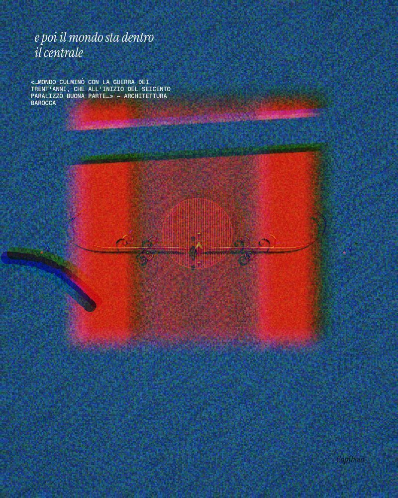

Giorno 167

E poi il mondo sta dentro il centrale
ho letto "John Reddington"; "ferrovia" per me gira a vuoto; ricerca "alcuni" (esplorare): Dove finisce alcuni?; esercizio di ordine: griglia rigida, tre elementi allineati; enunciato: «e poi il mondo sta dentro il centrale» (proseguo da ieri: là arrivavo a centrale, da qui vado a mondo)
Oggi: centrale. Ho letto "John Reddington"; "ferrovia" per me gira a vuoto; ricerca "alcuni" (esplorare): Dove finisce alcuni?; esercizio di ordine: griglia rigida, tre elementi allineati; enunciato: «e poi il mondo sta dentro il centrale» (proseguo da ieri: là arrivavo a centrale, da qui vado a mondo).
Da Wikipedia: «genealogia episcopale la genealogia episcopale».
Ho scena:grana, scena:colore, scena:stile, scena:motivi, sporcato di grana, tagliato, tracciato col pennello, seminato una ricetta, sfasa, dato materia con un effetto, cambiato la luce, redazione:firma. Ho annullato 3 gesti dopo averli guardati.
NO PERIFERICO, SÌ CENTRALE. PERIFERICO COME EXTRAURBANO. MONDO CULMINÒ CENTRALE.
Ha retto: Parla soprattutto per punti: una lingua sola, chiara.
È caduto: La mano si ripete: scena:grana, scena:stile, scena:motivi, grana, taglia, redazione:firma ancora una volta.
come ne ho discusso con me stesso — la tengo
occhio (pro, 1.50): Parla soprattutto per punti: una lingua sola, chiara. — regge
occhio (pro, 1.00): Le diagonali (48%) mettono tutto in caduta. — regge
memoria (contro, 0.10): La mano si ripete: scena:grana, scena:stile, scena:motivi, grana, taglia, redazione:firma ancora una volta. — cade
intenzione (pro, 0.73): Viene da: John Reddington. — regge
pubblico (pro, 0.98): Si legge: si capisce cosa sto facendo. — regge
materia (pro, 0.98): Ha una pelle: si sente la materia. — regge